Frequency/Phase Movement Analysis by Orthogonal Demodulation (part 2) - PLL Lock-in Trend Analysis by RTSPU Empowered Digitizer
Hideo Okawara, Verigy
Paper-ID: 120831 February 2010
Preface to the Papers
In mixed signal system-on-a-chip (SOC) testing, there are lots of needs to measure phase and frequency change of signals. For instance, in a PLL circuitry, the lock-in time is one of the most typical test items. In a read/write channel device for hard disc drives, small pulse shifts for write pre-compensation are tested. Waveform digitizers or samplers that are typical mixed signal pieces of equipment can measure such changing frequency/phase with sophisticated digital signal processing. The sampled data is processed with the orthogonal demodulation method (ODM), which can extract the instantaneous phase of the test signal and analyze the frequency/phase changing trend. Swept frequencies, phase-shifted clocks, shifted pulses or edges are analyzed.
There are lots of intriguing applications available with this method so that this paper will be separated as following issues.
- Basic theory and PLL lock-in trend analysis by waveform digitizer
- PLL lock-in trend analysis by RTSPU empowered digitizer
- More application examples of ODM
- ODM application by wide-band waveform sampler
In the previous issue, a PLL lock-in time is characterized with the ODM by using a conventional digitizer. The digitizer "MB-AV8" has actually a real-time signal processor integrated inside. It is actually very good at the ODM. In this issue, the same PLL application is discussed using the RTSPU empowered digitizer.
Application of RTSPU Empowered Digitizer
The ODM data processing is shown in Figure 1 to refresh your memory. The digitizer output waveform is uploaded in the computer workstation and processed with a cumbersome calculation actually. It extracts the instantaneous phase trend of the signal, which is interpreted into the frequency/phase changing trend.
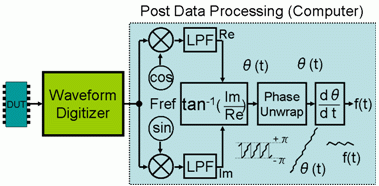
Figure 1: ODM Data Processing Scheme
The example of the PLL lock-in time analysis in the previous issue is actually able to play with the RTSPU empowered digitizer "MB-AV8." Figure 2 depicts the comparison of the conventional digitizer and the MB-AV8 digitizer (HF digitizer). The MB-AV8 digitizer integrates the RTSPU (real-time signal processing unit) between the ADC and the waveform memory. The RTSPU directly processes the ADC output, and performs as a low pass filter or a frequency down converter in real-time manner.
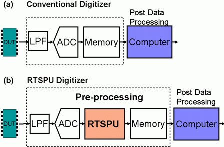
Figure 2: RTSPU Empowered Digitizer "MB-AV8"
When the RTSPU performs as a frequency down converter, it can be depicted as the colored area in Figure 3. Inside the RTSPU, the reference cosine and sine waveforms are generated and they are multiplied by the ADC output waveform. Each of the waveforms is convoluted and decimated respectively. This processing is exactly the same as the first part of the ODM in Figure 1, and it is done in real-time. Actually Figure 2 depicts that the RTSPU is already embedded in the ODM processing scheme. So the first half of the ODM processing can be done by the digitizer hardware inside, and the remaining processing is done by the computer workstation. The computer performs arctangent, phase unwrapping and differential calculation only. Time consuming sine/cosine calculation, multiplication and convolution are not necessary. Actually the decimation reduces the number of data points to be uploaded to the computer so that the real-time processing plus smaller number of data extremely improve the total throughput which is one of the most important factors in production test.
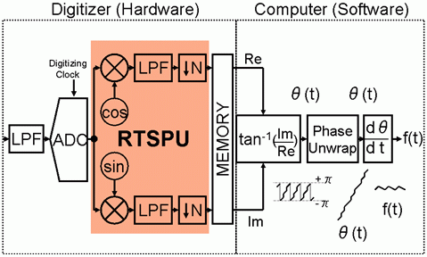
Figure 3:RTSPU as Frequency Down Converter
Experimental Result
Figure 4 depicts the measurement configuration, which is exactly the same as the previous issue except the digitizer condition. In the conventional mode the digitizer runs at the rate of 100 Msps. Now the RTSPU empowered digitizer runs at 25.125 Msps as the output data rate. The RTSPU digitizer needs the reference frequency value which is settled approximately 33MHz. The test signal clock is shown in Figure 4. It is generated a digital pin such as the Pin Scale 800. Starting 28.125 MHz, the clock frequency is changed to 37.5 MHz on-the-fly.
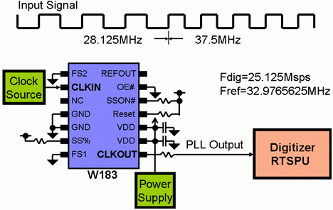
Figure 4: Measurement Configuration
Figure 5 shows the first half block diagram of the ODM processing done by the digitizer hardware and the uploaded waveforms. The signal goes through the anti-aliasing filter and is digitized by the ADC, which actually runs at the rate of 100.5 Msps (4xFdig) here. The RTSPU automatically generates the cosine and sine waveforms at the rate of 100.5 Msps, which are multiplied to the ADC output waveform in real-time. The multiplied signals are convoluted with a finite impulse response (FIR) array of a low pass filter (LPF). Each of the signals is decimated by the factor of 4 and stored in the waveform memory at the rate of 25.125 Msps, which is the user-specified digitizer rate. The output waveforms of the RTSPU digitizer are shown in Figure5. They are a pair of complex waveform data. The size of the complex number is 5400 in this experiment. The data size of real and imaginary parts is 5400 points respectively. If the measurement is done by the conventional digitizer, the data size would be 21600. The total data upload time would be reduced half in this case. The decimation really contributes the throughput enhancement.
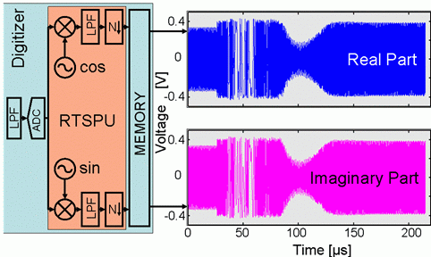
Figure 5: Uploaded Data
Figure 6 depicts the data processing scheme on the frequency domain.

Figure 6: Frequency Conversion Process
For comprehension, the uploaded complex data is processed with FFT, and the frequency spectrum appears as Figure 7. You can see the original signal sitting around 33MHz is shifted to around the DC. This is the frequency down conversion that is one of the functionalities of the RTSPU.
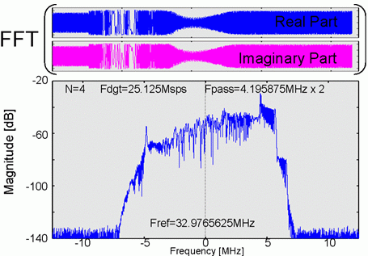
Figure 7: Frequency Spectrum (Comprehension Purpose Only)
Now that the sine and cosine signals are uploaded, the arctangent can convert them into the instantaneous phase as Figure 8.
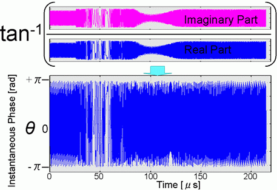
Figure 8: Arctangent Operation
As you already notice, the phase data is limited within +/-π so that you should un-wrap the data into a single continuous curve, which is shown in Figure 9.
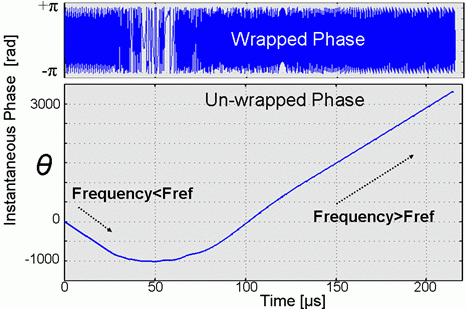
Figure 9: Instantaneous Phase Un-wrapping
The negative slope of the instantaneous phase trend means that the signal frequency is lower than the reference frequency, and the positive slope means that the signal frequency is greater than the reference. The differential calculation of the instantaneous phase derives the relative frequency or the ratio factor to the reference frequency, which is set 32.9795625MHz here as shown in Figure 4. Then the frequency trend is derived as Figure 10.
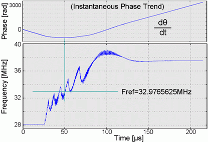
Figure 10: Frequency Trend
You can see some fluffy noise on the curve. It seems to come from a small residual noise not suppressed well by the LPF shown in Figure 6 (e). Therefore a light moving average can make the frequency trend smooth as Figure 11.
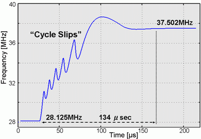
Figure 11: Smoothed Frequency Trend
Test throughput gain should be discussed. Table 1 describes the precise test time comparison of the RTSPU digitizer versus the conventional digitizer. The measurement time including overhead is 13.6 ms. RTSPU performs the cosine/sine generation and multiplication and LPF convolution in real-time manner so that the time is absorbed in the measurement time. Moreover RTSPU decimates the data so that the data upload time and post processing time in the computer are extremely reduced. The bottom line says that the RTSPU digitizer slashes 57 % of the test time of the conventional digitizer. (This time data was collected in late 2006 with SmarTest Rev. 5.X.)
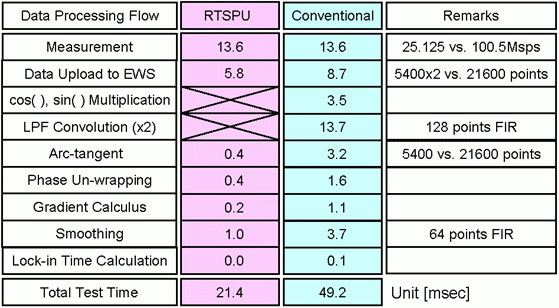
Table 1: Test Time Break-down
The "MB-AV8" digitizer has the functionality of the frequency down conversion using the built-in RTSPU. This is basically developed for the PinScale RF system so that it is not so familiar with application engineers. However, it is very useful for this kind of application. Author hopes that "MB-AV8" and its RTSPU would be utilized wider variety of applications.